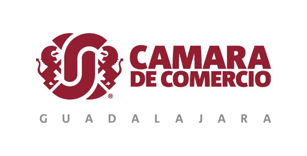
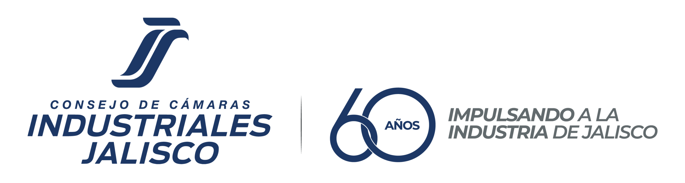
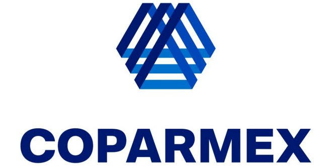
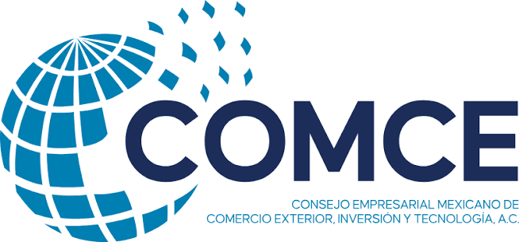
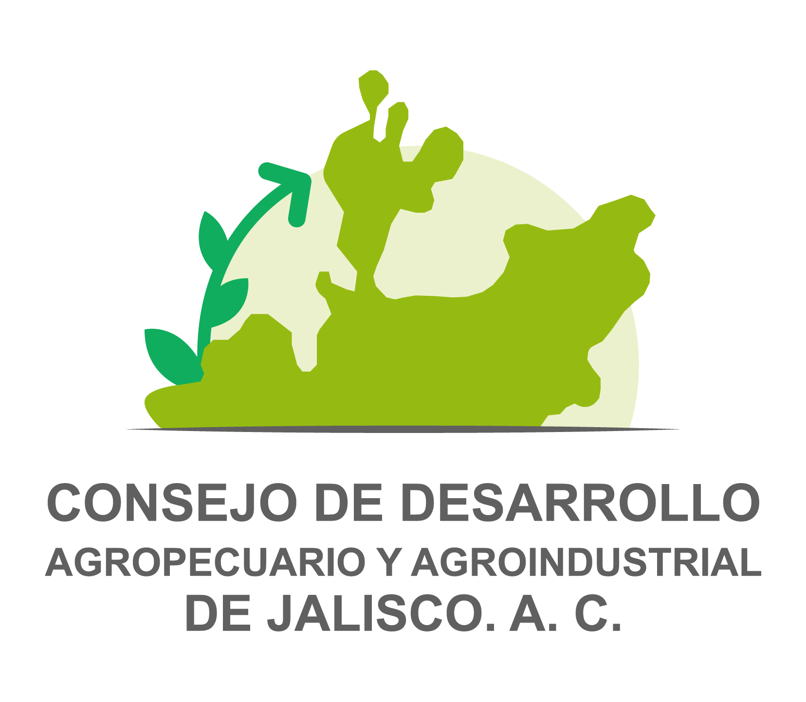

Reconocemos a las empresas que construyen integridad, no solo la declaran.
Obtén el Distintivo Pro Integridad y forma parte del directorio de empresas comprometidas con la ética y la prevención de la corrupción en Jalisco.
Presenta tu registro como empresa
Solicita el Distintivo si representas una organización con RFC empresarial.
Presenta tu registro como persona física
Solicita el Distintivo si operas bajo actividad empresarial.
Pro Integridad Empresas es el programa del Gobierno de Jalisco que reconoce, mediante el Distintivo Pro Integridad, a las empresas y organizaciones que acreditan contar con una política de integridad corporativa.
Pero… ¿Qué es el Distintivo Pro Integridad y por qué importa?
El Distintivo Pro Integridad es una acreditación otorgada conjuntamente por la Coordinación General Estratégica de Crecimiento y Desarrollo Económico y la Contraloría del Estado, que reconoce a empresas y organizaciones con una política de integridad corporativa alineada al artículo 25 de la Ley General de Responsabilidades Administrativas.
Este distintivo busca promover que el sector empresarial desarrolle e implemente controles internos que garanticen una cultura ética y prevengan hechos de corrupción, en corresponsabilidad con el sector público.
¿Por qué importa a nivel empresarial?
- Te vuelve más competitiv@
- Te ayuda a detectar y prevenir riesgos de corrupción
- Atrae nuevos colaboradores y clientes
- Ayuda a retener talento
- Facilita el acceso a nuevos mercados
¿Por qué importa a nivel económico?
Impacto en cifras
Los 7 elementos de la política de integridad
1Manual de organización y procedimientos⌄
- Organigrama y funciones
- Procesos específicos
- Mapeo de áreas vulnerables
2Código de conducta⌄
- Misión, visión y valores
- Mecanismos anticorrupción
- Conductas con terceros
- Constancias de cumplimiento
3Sistemas de control, vigilancia y auditoría⌄
- Identificación de procesos
- Mapa y matriz de riesgos
- Plan de acción
- Programa de auditoría
4Sistemas de denuncia⌄
- Mecanismo de recepción
- Proceso de denuncia
- Estrategia de respuesta
- Medidas disciplinarias
5Sistemas de entrenamiento y capacitación⌄
- Programa vigente
- Evidencia de la última capacitación
6Política de recursos humanos⌄
- Definición de puestos
- Identificación de riesgos por puesto
- Cláusulas anticorrupción en contratos
7Mecanismos de transparencia y publicidad⌄
- Estrategias de difusión
- Constancia de publicación
Beneficios de la acreditación
¿Cómo obtener el Distintivo?
Consulta la convocatoria y el manual
Revisa los requisitos vigentes para tu tipo de organización.
Ver convocatoria ↗Verificación
La Contraloría revisa tu política de integridad y, en su caso, solicita adecuaciones.
Entrega del Distintivo
Recibes tu acreditación, vigente por un año.
Biblioteca de recursos
Manual del Distintivo
Ver documento ↗Acuerdo Legislativo Promoción Distintivo ProIntegridad
Ver documento ↗Fotografías Sesión CCM-E Ruta Municipal Pro Integridad
Ver galería ↗Convocatoria 6ª edición
Ver documento ↗Video: Ruta Municipal Pro Integridad
Ver video ↗Calendario de sesiones y talleres
Ver documento ↗Reglas de uso del Distintivo
Descargar ↗Libro Blanco Pro Integridad
Descargar ↗Directorio de Empresas Pro Integridad. Consulta qué empresas ya cuentan con el Distintivo y vincúlate con ellas.
Con el respaldo de:




